-
기증안내
잠자고 있는 소중한 기억을 기증받습니다.
-
이용안내
누리집 이용방법을 안내해드립니다.
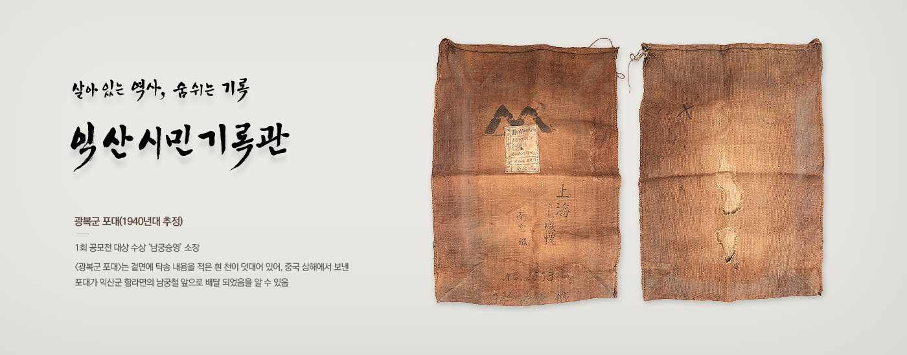
- 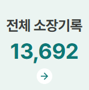

- 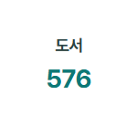
- 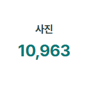
- 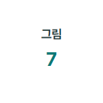
- 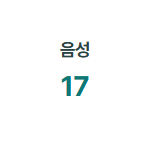
- 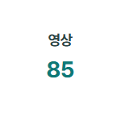
- 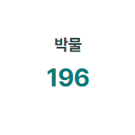
온라인 전시
-
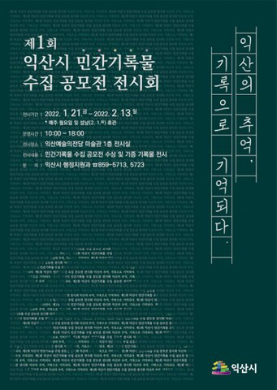
익산의 추억, 기록으로 기억되다
-
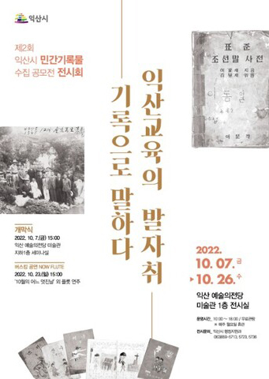
익산교육의 발자취, 기록으로 말하다
-
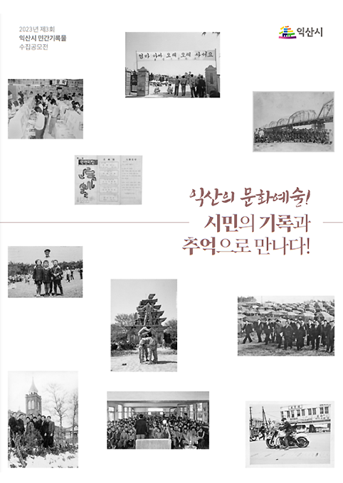
익산의 문화예술! 시민의 기록과 추억으로 만나다!
-
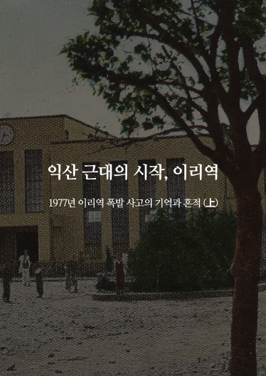
익산 근대의 시작, 이리역
컬렉션
-
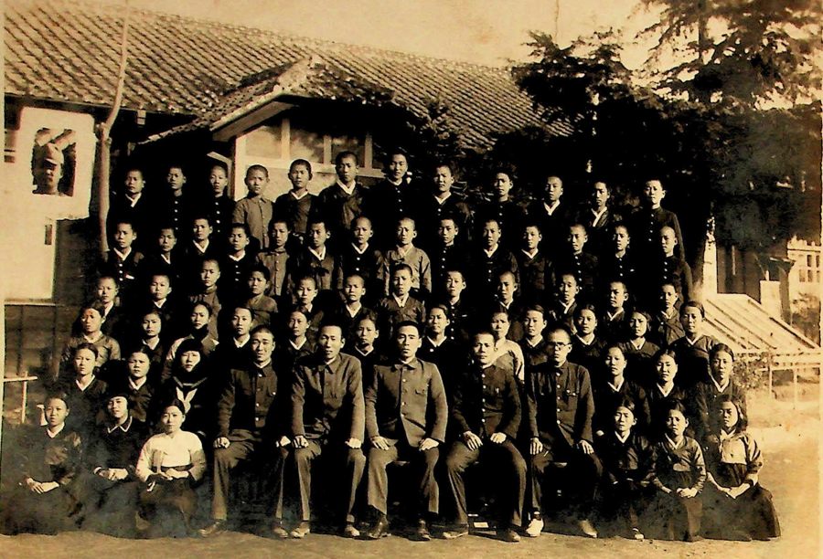
익산시 소장 기록
-
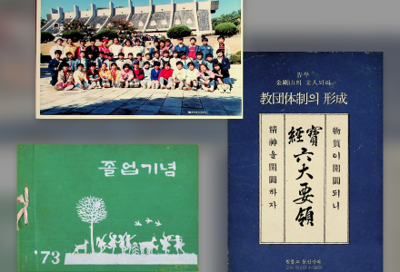
공모전 기록
-
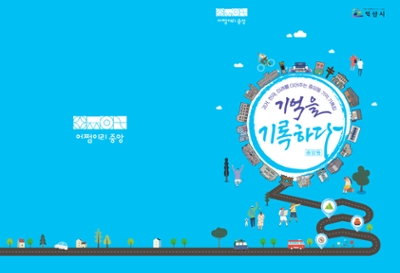
분야별기록
함께 만드는 지도
‘어디서나, 누구나’ 익산에 대한 기록을 남길 수 있는 함께 만드는 지도
-
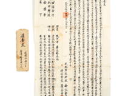
통고문(通告文)
2024-01-04 공모전 기록물 -

이길여 박사 영상
2024-01-04 공모전 기록물 -
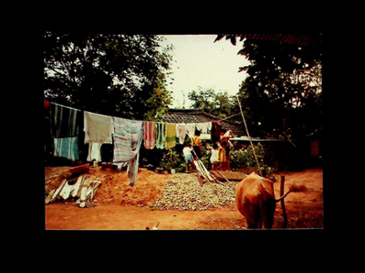
1980년대와 90년대 왕궁면 사곡마을 사진
2024-01-04 공모전 기록물 -
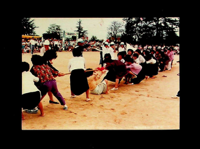
왕궁국민학교 운동회 관련 사진
2024-01-04 공모전 기록물
명예의 전당
-
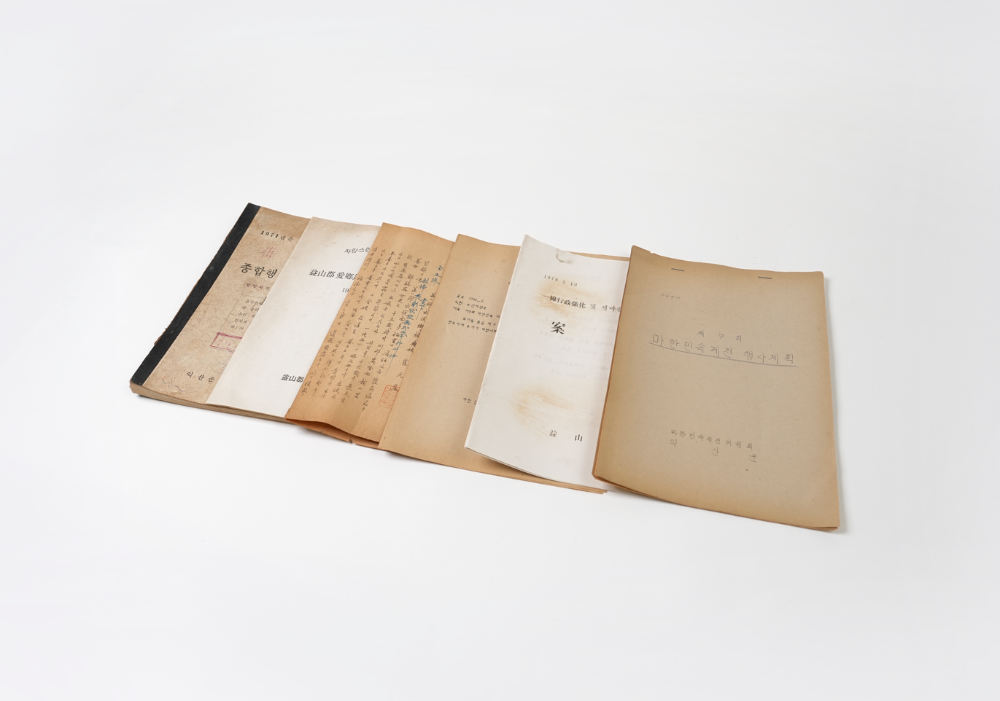
백강흠
-
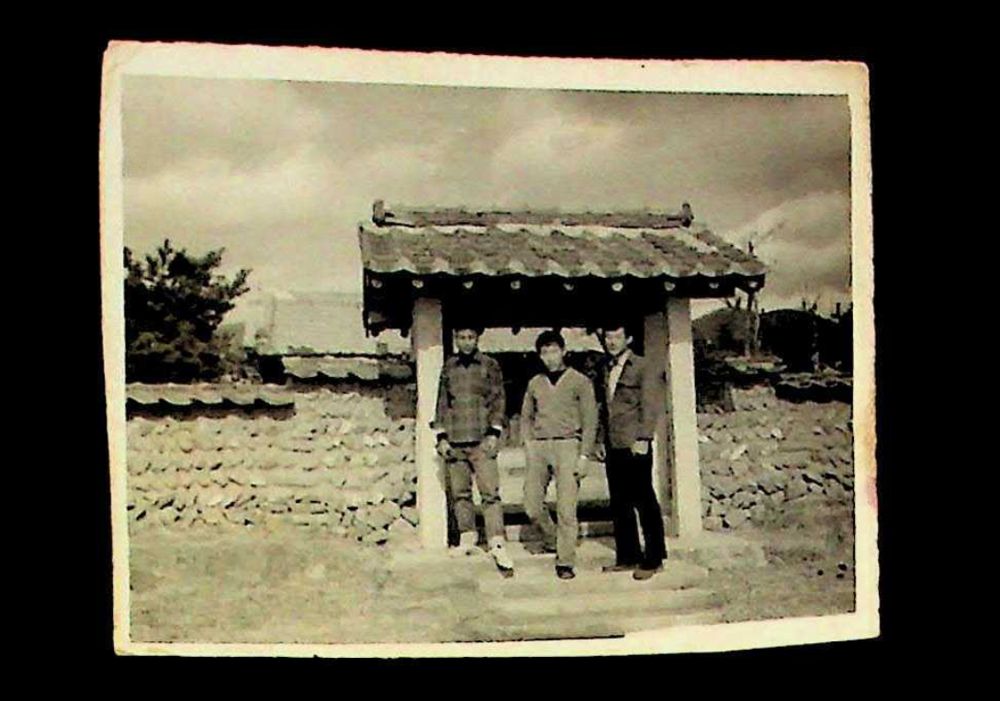
이광희
-
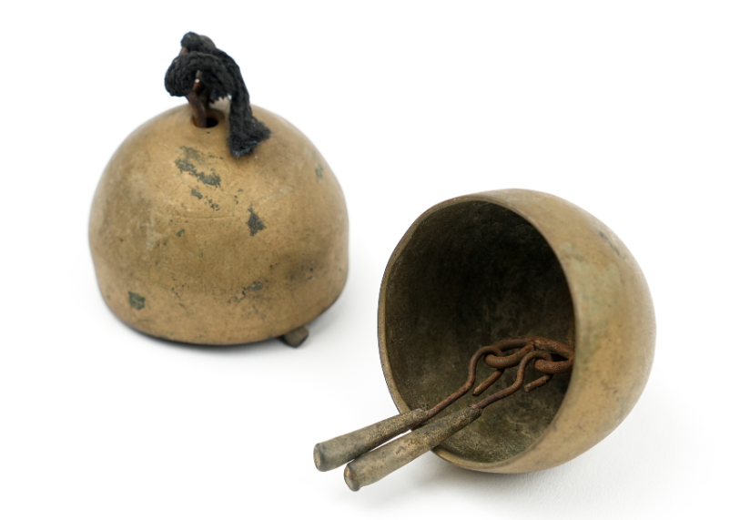
송양석
-
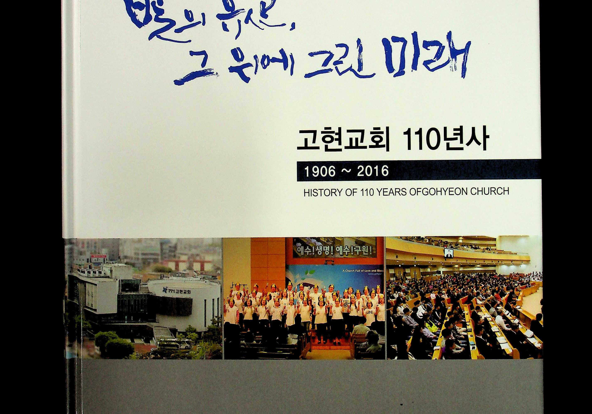
교현교회
영상
익산시 민간기록 특강 두번째 이야기
기록집
익산시 문화예술인 인터뷰록
오디오북
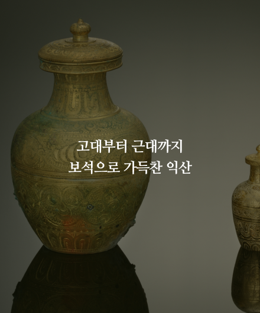
고대부터 근대까지 보석으로 가득찬 익산
공지사항
-
익산시민역사기록관 가정의달 방문주간 운영안내
가정의 달 5월을 맞이하여 익산시민역사기록관 방문주간을 운영하오니 시민 여러분들의 많은 방문을 부탁드립니다.
2025-04-24
-
제5회 익산시 민간기록물 수집 공모전 "익산군이 이리양을 만났을 때"
이리·익산 통합(1995. 5. 10.) 30주년을 기념하며 이리시·익산군 자료를 수집 및 보존하기 위하여 「제5회 익산시 민간기록물 수집 공모전」을 개최하오니, 소중한 기록물이 후대에 전승될 수 있도록 많은 참여 바랍니다.
2025-04-23
시민기록활동가
-
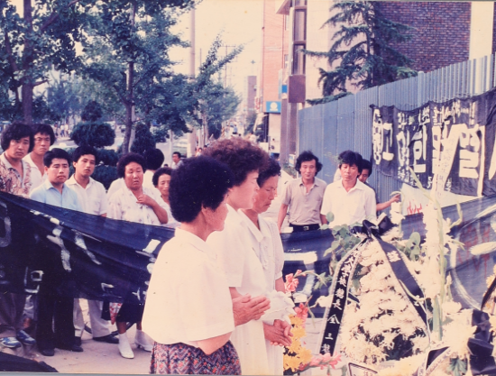
익산민주화운동 정리 사진
-
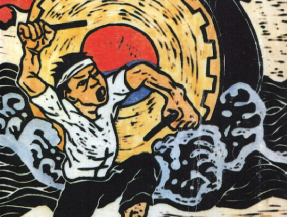
익산의 노동운동과 농민운동